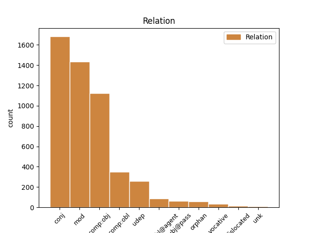
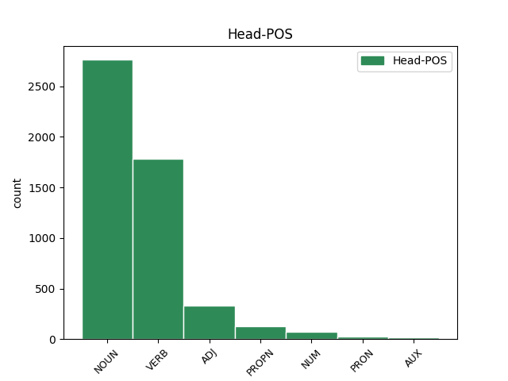
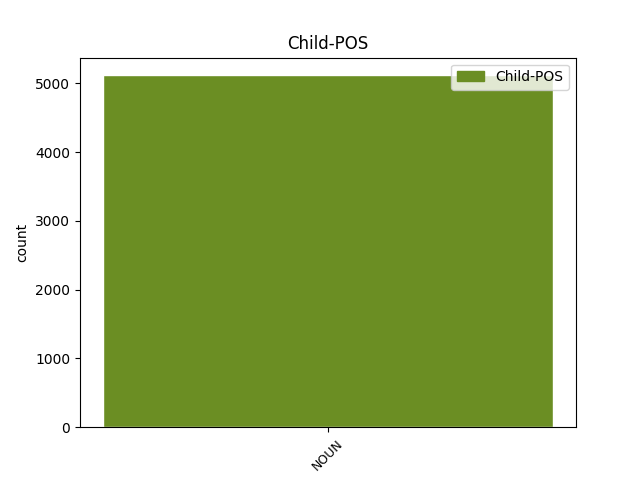

Distribution of features within this leaf



Agreement Rules sorted by frequency.
- When the dependent token is the conjunct(conj) of the head token, and the dependent token is NOUN.
1 Слава _ _ _ _ 0 _ _ _
2 Игорю игорь PROPN Ne Case=Dat|Gender=Masc|Number=Sing 0 _ _ _
3 Святъславличю _ _ _ _ 0 _ _ _
4 буй _ _ _ _ 0 _ _ _
5 туру туръ NOUN Nb Case=Dat|Gender=Masc|Number=Sing 2 conj _ ref=216
6 Всеволоду _ _ _ _ 0 _ _ _
7 Владиміру _ _ _ _ 0 _ _ _
8 Игоревичу _ _ _ _ 0 _ _ _
1 уношу уноша NOUN Nb Case=Acc|Gender=Masc|Number=Sing 0 _ _ _
2 князю кънязь NOUN Nb Case=Dat|Gender=Masc|Number=Sing 1 mod _ ref=197
3 Ростиславу _ _ _ _ 0 _ _ _
4 затвори _ _ _ _ 0 _ _ _
5 Днѣпрь _ _ _ _ 0 _ _ _
6 темнѣ _ _ _ _ 0 _ _ _
7 березѣ _ _ _ _ 0 _ _ _
1 худу _ _ _ _ 0 _ _ _
2 струю _ _ _ _ 0 _ _ _
3 имѣя _ _ _ _ 0 _ _ _
4 пожръши пожрѣти VERB V- Case=Nom|Gender=Fem|Number=Sing|Strength=Strong|Tense=Past|VerbForm=Part|Voice=Act 0 _ _ _
5 чужи _ _ _ _ 0 _ _ _
6 ручьи ручии NOUN Nb Case=Acc|Gender=Fem|Number=Plur 4 comp:obj _ ref=197
7 и _ _ _ _ 0 _ _ _
8 стругы _ _ _ _ 0 _ _ _
9 ростре _ _ _ _ 0 _ _ _
10 на _ _ _ _ 0 _ _ _
11 кусту _ _ _ _ 0 _ _ _
1 Рекъ рещи VERB V- Case=Nom|Gender=Masc|Number=Sing|Strength=Strong|Tense=Past|VerbForm=Part|Voice=Act 0 _ _ _
2 Боянъ _ _ _ _ 0 _ _ _
3 и _ _ _ _ 0 _ _ _
4 ходы _ _ _ _ 0 _ _ _
5 на _ _ _ _ 0 _ _ _
6 Святъславля _ _ _ _ 0 _ _ _
7 пѣстворца _ _ _ _ 0 _ _ _
8 стараго _ _ _ _ 0 _ _ _
9 времени _ _ _ _ 0 _ _ _
10 Ярославля _ _ _ _ 0 _ _ _
11 Ольгова _ _ _ _ 0 _ _ _
12 коганя _ _ _ _ 0 _ _ _
13 хоти хоть NOUN Nb Case=Dat|Gender=Masc|Number=Sing 1 comp:obl _ ref=209
1 Пѣвше пѣти VERB V- Case=Nom|Gender=Masc|Number=Plur|Strength=Strong|Tense=Past|VerbForm=Part|Voice=Act 0 _ _ _
2 пѣснь _ _ _ _ 0 _ _ _
3 старымъ _ _ _ _ 0 _ _ _
4 княземъ кънязь NOUN Nb Case=Dat|Gender=Masc|Number=Plur 1 udep _ ref=215
5 а _ _ _ _ 0 _ _ _
6 потомъ _ _ _ _ 0 _ _ _
7 молодымъ _ _ _ _ 0 _ _ _
8 пѣти _ _ _ _ 0 _ _ _
1 Ваю _ _ _ _ 0 _ _ _
2 храбрая _ _ _ _ 0 _ _ _
3 сердца сьрдьце NOUN Nb Case=Nom|Gender=Neut|Number=Plur 7 subj@pass _ ref=113
4 въ _ _ _ _ 0 _ _ _
5 жестоцемъ _ _ _ _ 0 _ _ _
6 харалузѣ _ _ _ _ 0 _ _ _
7 скована съковати VERB V- Case=Nom|Gender=Neut|Number=Plur|Strength=Strong|Tense=Past|VerbForm=Part|Voice=Pass 0 _ _ _
8 а _ _ _ _ 0 _ _ _
9 въ _ _ _ _ 0 _ _ _
10 буести _ _ _ _ 0 _ _ _
11 закалена _ _ _ _ 0 _ _ _
1 и _ _ _ _ 0 _ _ _
2 быс _ _ _ _ 0 _ _ _
3 греком _ _ _ _ 0 _ _ _
4 плач _ _ _ _ 0 _ _ _
5 и _ _ _ _ 0 _ _ _
6 оужасъ _ _ _ _ 0 _ _ _
7 велїи _ _ _ _ 0 _ _ _
8 ѡ _ _ _ _ 0 _ _ _
9 рагкавеи _ _ _ _ 0 _ _ _
10 понеже _ _ _ _ 0 _ _ _
11 ратникъ _ _ _ _ 0 _ _ _
12 бѣ _ _ _ _ 0 _ _ _
13 велїи _ _ _ _ 0 _ _ _
14 моужественъ _ _ _ _ 0 _ _ _
15 и _ _ _ _ 0 _ _ _
16 ц҃рю цѣсарь NOUN Nb Case=Dat|Gender=Masc|Number=Sing 17 comp:obl@agent _ ref=301r2
17 любим любити VERB V- Case=Nom|Gender=Masc|Number=Sing|Strength=Strong|Tense=Pres|VerbForm=Part|Voice=Pass 0 _ _ _
1 и _ _ _ _ 0 _ _ _
2 бѣ _ _ _ _ 0 _ _ _
3 слышати _ _ _ _ 0 _ _ _
4 трескотъ _ _ _ _ 0 _ _ _
5 и _ _ _ _ 0 _ _ _
6 сътренїе _ _ _ _ 0 _ _ _
7 тоуръ _ _ _ _ 0 _ _ _
8 и _ _ _ _ 0 _ _ _
9 вопль _ _ _ _ 0 _ _ _
10 и _ _ _ _ 0 _ _ _
11 стонанїе _ _ _ _ 0 _ _ _
12 людʼское _ _ _ _ 0 _ _ _
13 страшно _ _ _ _ 0 _ _ _
14 ꙗко _ _ _ _ 0 _ _ _
15 ѡбѣма _ _ _ _ 0 _ _ _
16 бежати _ _ _ _ 0 _ _ _
17 гражане гражанинъ NOUN Nb Case=Nom|Gender=Masc|Number=Plur 0 _ _ _
18 ꙋбо _ _ _ _ 0 _ _ _
19 сʼ _ _ _ _ 0 _ _ _
20 стѣны _ _ _ _ 0 _ _ _
21 въ _ _ _ _ 0 _ _ _
22 градʼ _ _ _ _ 0 _ _ _
23 а _ _ _ _ 0 _ _ _
24 тоуркы турчинъ NOUN Nb Case=Nom|Gender=Masc|Number=Plur 17 orphan _ ref=297v14
25 ѿ _ _ _ _ 0 _ _ _
26 града _ _ _ _ 0 _ _ _
27 далече _ _ _ _ 0 _ _ _
1 Уже _ _ _ _ 0 _ _ _
2 бо _ _ _ _ 0 _ _ _
3 братіе братия NOUN Nb Case=Voc|Gender=Fem|Number=Sing 7 vocative _ ref=75
4 не _ _ _ _ 0 _ _ _
5 веселая _ _ _ _ 0 _ _ _
6 година _ _ _ _ 0 _ _ _
7 въстала въстати VERB V- Aspect=Res|Case=Nom|Gender=Fem|Number=Sing|Strength=Strong|VerbForm=Part|Voice=Act 0 _ _ _
1 Галичкы _ _ _ _ 0 _ _ _
2 Осмомыслѣ осмомыслъ NOUN Nb Case=Voc|Gender=Masc|Number=Sing 3 dislocated _ ref=130
3 Ярославе ярославъ PROPN Ne Case=Voc|Gender=Masc|Number=Sing 0 _ _ _
1 и _ _ _ _ 0 _ _ _
2 видѣвъша видѣти VERB V- Case=Nom|Gender=Masc|Number=Dual|Strength=Strong|Tense=Past|VerbForm=Part|Voice=Act 0 _ _ _
3 господина господинъ NOUN Nb Case=Gen|Gender=Masc|Number=Sing 2 unk _ ref=true
4 своѥго _ _ _ _ 0 _ _ _
5 дрꙗхла _ _ _ _ 0 _ _ _
6 и _ _ _ _ 0 _ _ _
7 печалию _ _ _ _ 0 _ _ _
8 облиꙗна _ _ _ _ 0 _ _ _
9 суща _ _ _ _ 0 _ _ _
10 зѣло _ _ _ _ 0 _ _ _
11 расплакастасꙗ _ _ _ _ 0 _ _ _
12 сꙗ _ _ _ _ 0 _ _ _
13 зѣло _ _ _ _ 0 _ _ _
14 и _ _ _ _ 0 _ _ _
15 гл҃аста _ _ _ _ 0 _ _ _
Disagree Examples:
1 за _ _ _ _ 0 _ _ _
2 млт҃вѹ молитва NOUN Nb Case=Acc|Gender=Fem|Number=Sing 0 _ _ _
3 ст҃хъ _ _ _ _ 0 _ _ _
4 ѡц҃ь отьць NOUN Nb Case=Gen|Gender=Masc|Number=Plur 2 mod _ ref=1
5 наших _ _ _ _ 0 _ _ _
6 г҃и _ _ _ _ 0 _ _ _
7 їс҃е _ _ _ _ 0 _ _ _
8 х҃е _ _ _ _ 0 _ _ _
9 сн҃е _ _ _ _ 0 _ _ _
10 бж҃їи _ _ _ _ 0 _ _ _
11 помилѹи _ _ _ _ 0 _ _ _
12 мѧ _ _ _ _ 0 _ _ _
13 раба _ _ _ _ 0 _ _ _
14 своего _ _ _ _ 0 _ _ _
15 грѣш꙽наго _ _ _ _ 0 _ _ _
16 афонасьѧ _ _ _ _ 0 _ _ _
17 микитина _ _ _ _ 0 _ _ _
18 сна _ _ _ _ 0 _ _ _
1 поидох _ _ _ _ 0 _ _ _
2 на _ _ _ _ 0 _ _ _
3 низъ _ _ _ _ 0 _ _ _
4 волгою _ _ _ _ 0 _ _ _
5 и _ _ _ _ 0 _ _ _
6 приидохъ _ _ _ _ 0 _ _ _
7 в _ _ _ _ 0 _ _ _
8 манастырь _ _ _ _ 0 _ _ _
9 къ _ _ _ _ 0 _ _ _
10 ст҃ѣи _ _ _ _ 0 _ _ _
11 живоначалнои _ _ _ _ 0 _ _ _
12 троци троица NOUN Nb Case=Dat|Gender=Fem|Number=Sing 0 _ _ _
13 и _ _ _ _ 0 _ _ _
14 ст҃мъ _ _ _ _ 0 _ _ _
15 мчн҃комъ мученикъ NOUN Nb Case=Dat|Gender=Masc|Number=Plur 12 conj _ ref=2
16 борисѹ _ _ _ _ 0 _ _ _
17 н _ _ _ _ 0 _ _ _
18 глѣбѹ _ _ _ _ 0 _ _ _
1 и _ _ _ _ 0 _ _ _
2 ѹ _ _ _ _ 0 _ _ _
3 игѹмена игуменъ NOUN Nb Case=Gen|Gender=Masc|Number=Sing 0 _ _ _
4 сѧ _ _ _ _ 0 _ _ _
5 блгсвивъ _ _ _ _ 0 _ _ _
6 ѹ _ _ _ _ 0 _ _ _
7 макарїѧ _ _ _ _ 0 _ _ _
8 брати братия NOUN Nb Case=Gen|Gender=Fem|Number=Sing 3 conj _ ref=2
9 ис _ _ _ _ 0 _ _ _
10 колѧзина _ _ _ _ 0 _ _ _
11 поидох _ _ _ _ 0 _ _ _
12 на _ _ _ _ 0 _ _ _
13 ѹглечь _ _ _ _ 0 _ _ _
1 а _ _ _ _ 0 _ _ _
2 кречатовъ кречатъ NOUN Nb Case=Gen|Gender=Masc|Number=Plur 5 mod _ ref=2
3 ѹ _ _ _ _ 0 _ _ _
4 него _ _ _ _ 0 _ _ _
5 девѧносто девяносто NUM Ma Case=Nom|Gender=Neut|Number=Sing 0 _ _ _
1 и _ _ _ _ 0 _ _ _
2 сказали съказати VERB V- Aspect=Res|Case=Nom|Gender=Masc|Number=Plur|Strength=Strong|VerbForm=Part|Voice=Act 0 _ _ _
3 нам _ _ _ _ 0 _ _ _
4 лживыѧ _ _ _ _ 0 _ _ _
5 вѣсти вѣсть NOUN Nb Case=Acc|Gender=Fem|Number=Plur 2 comp:obj _ ref=3